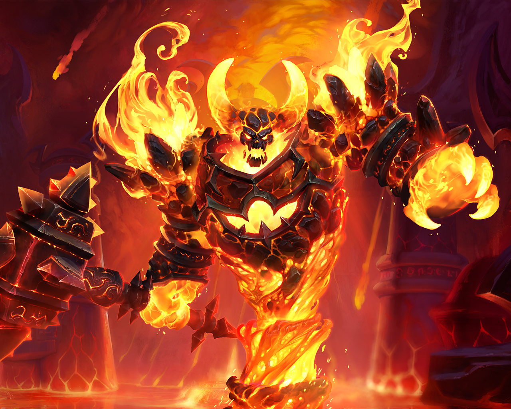
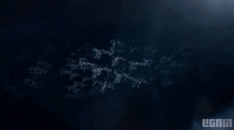
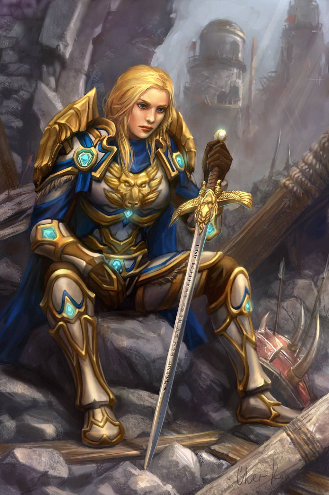
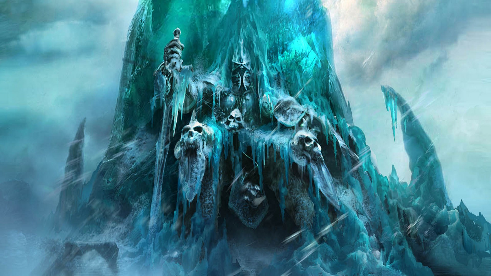
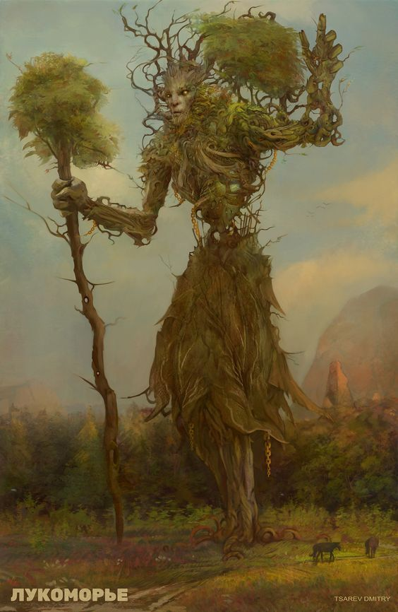
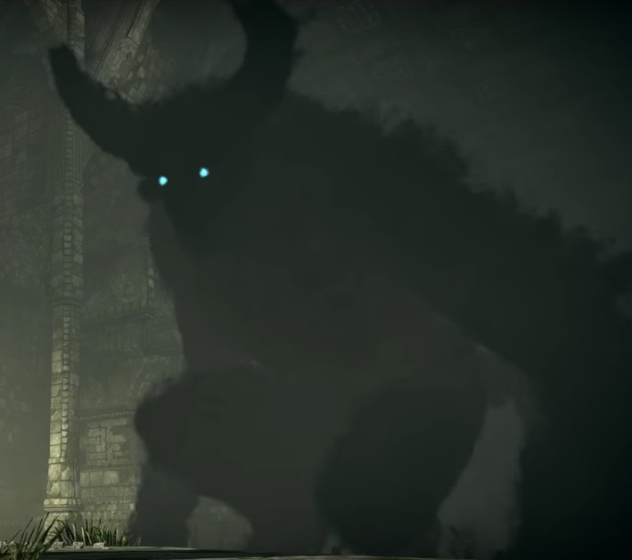

Os Deuses
Independente das religiões, existem seres supremos que representam aspectos da realidade, e regem absolutos com seus poderes. São seres imortais, que existem além do tempo e do espaço; por esse motivo é impossível descrevê-los ou contar sua história com palavras humanas, ou com qualquer lingua de ser temporal. A história contada aqui é uma aproximação humana criada a partir de diversos mitos; mesmo assim, nenhuma mente é capaz de compreender completamente os eventos relatados.
O Começo
No começo havia tudo, em todo lugar, sempre. E era tudo sobre tudo mas não havia nada para se pensar, pois tudo era; também não havia tempo para ser pois já era sempre. Uma eternidade se passou em um instante, então pensou pela primeira vez; o primeiro pensamento foi simetria. E desse pensamento primordial, se separou em dois, pois era assim que imaginou: duas partes de um todo, uma era o reflexo da outra, em perfeita simetria.
Criação
Criação, uma das metades primordiais. O aspecto do ser, e do existir, e do haver. Nos saberes sulistas, ele é representado como um enorme dragão cerúleo, e é dito ser responsável por dar graça da animancia aos humanos.
Destruição
Destruição é a segunda metade do par primordial. O aspecto do deixar de ser, do fim, e da mudança. Não é reconhecido por nenhum sistema de saberes dos humanos, embora suas ações tenham muita influência sobre a história da humanidade.
A Criação do Universo
No começo, Criação e Destruição lutavam entre si, um tentando dominar o outro. Tudo o que um criava, o outro destruía; tudo que um destruía, o outro criava. Com suas intermináveis batalhas, criaram vários universos, cada um com seu próprio conjunto de regras e leis; mas no final, todos eles colapsaram de volta para nada. Certa vez, um universo surgiu, um que glorificava os dois seres igualmente: tudo tinha um fim, e o fim significava começo para outra coisa; as estrelas nascem, apenas para morrer e jogar sua matéria no espaço infindo, destinadas a se aglomerar novamente em nova forma, apenas para serem destruídas novamente. Esse universo contentou tanto o par primordial, que deixaram de lado sua contenda para terminar a sua criação, pois ainda faltava uma peça fundamental para ser perfeito: o tempo para que as coisas aconteçam.
Instante
Da vontade de Criação e Destruição de que houvesse causa, nasceram deles mais dois aspectos. Instante é o aspecto do efêmero, do momento, e da causa. Costuma ser atribuído ao instante uma forma feminina, pela ligação com a Senhora Isis, conhecida por ser seu avatar.
Eternidade
Eternidade é o aspecto do perpétuo e do infinito. Numa visão, Akvyr viu Eternidade como um cavaleiro negro, sentado, imóvel e gigante, como uma montanha; de voz ribombante e absoluta.
O Tempo
Juntos, Instante e Eternidade formam o tempo, o palco para a peça do universo. Pois o tempo é a medida do agora, que existe em Instante; mas o tempo se move para frente, sempre rumo ao infinito de Eternidade. No tempo as coisas acontecem, e a infinita força da causalidade move o universo para frente, para seu infinito ciclo de criação e destruição; um universo perfeito, simétrico. Os quatro deuses se admiravam com sua criação.
Vida
Os quatro deuses se deleitaram tanto com sua criação que desejaram que houvesse mais olhos para vê-la, imaginaram infinitas luzes olhando para o infinito do espaço, contemplando a beleza da simetria pura. Desse desejo, nasceram mais dois aspectos. Vida é o aspecto do florescer, da permanência e do deleite. Na tradição saruhmie, Vida é representada como uma mulher-árvore, que rege os saruhmie por meio da Grande Árvore que vive no coração do Vale. Dela vieram seres de luz, eternos e perfeitos, que se deleitavam com a existência ao lado dos deuses.
Morte
Mas a simetria reina suprema, acima dos deuses. E se existe a vida, também existe a morte. Um último aspecto surgiu, não mais que uma sombra, seus dedos longos se estendiam para encerrar os seres de luz. Vida replicou, deu para os seres vivos o poder da mudança, e lhes deu o poder de perdurar na forma de seus descendentes. Mais uma vez, os aspectos opostos brigaram, os seres vivos eram destinados a morrer, mas os seres vivos conseguiam se aprimorar pouco a pouco, para continuar vivos mais um pouco, e depois passar a vida para frente, numa nova geração aprimorada.
O Aterro de Morte
Vida não se contentou com a subsistência de sua criação, subjugada pelo destino de Morte; por vezes, os seres vivos matavam uns aos outros para perdurar, de forma que a Morte surgia pela Vida. Isso deixou Vida profundamente furiosa, e bolou um plano para enganar Morte e prendê-lo no plano temporal. O plano funcionou, e Morte ficou confinado na limitação do instante e da causalidade, não podia mais alcançar os seres vivos com seus dedos. Pois Vida aterrou Morte sob nada, areia, terra e água. Ela usou como molde uma forma de vida mais aprimorada que havia: o humano; e dessa forma de vida fez os saruhmie, ainda mais perfeitos; pois na medida que se assemelham aos humanos na forma que falam e que andam e que comem, se assemelham também às plantas na forma que respiram e que veem e que pensam. Morte chorou, e chorou; pois estava sozinho, aterrado e esquecido, e de suas lágrimas nasceram os demônios, a antítese da vida. Os demônios são destinados a encontrar os seres vivos e lhes atormentar, eventualmente os dois se colidem e ambos se destroem; Morte agora alcança os seres vivos com seus filhos.